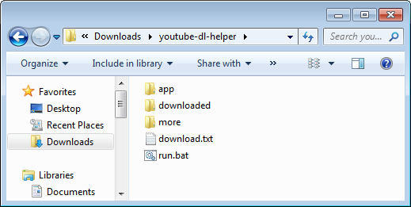
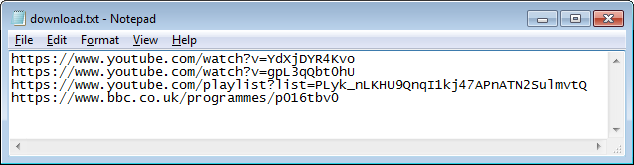
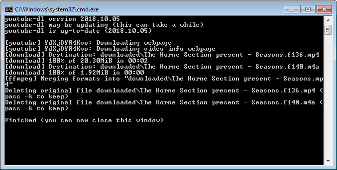

yt-bat
yt-bat is for downloading video or audio from many sites without requiring the use of the command-line. It's for Windows and it's basically just a few very simple batch files that use yt-dlp.
Download and instructions
- Download yt-bat.zip and extract it anywhere on your computer that doesn't require administrator permission to write to (for example, the desktop or downloads folder are OK, but not the Program Files folder) and open the yt-bat folder.

- Double-click on download.txt to open it in Notepad and paste in the URLs of the pages containing the video or audio you want to download. You can put multiple URLs on separate lines. Save the file with Ctrl + S or by clicking File > Save.

- Double-click on run.bat. A command-line window will open, showing the status of the downloading files. The downloaded files will be in the downloaded folder.

More options
Open the more folder and instead of run.bat you can run...
- audio.bat: Download just the audio in the best quality available
- mp3.bat: Download just the audio and re-encode it to MP3
- best.bat: Download video in the best quality available (which may not be MP4)
- date.bat: Prepend the upload date to the filename
- subs.bat: Download video and embed subtitles
If you want, you can...
- Move the .bat files out of the more folder and into the yt-bat folder or vice versa
- Delete the ones you don't want
- Edit them and create your own using Notepad and the yt-dlp documentation